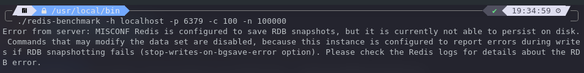

WRONG ERROR FROM SERVER: MISCONF REDIS IS CONFIGURED TO SAVE RDB SNAPSHOTS

在使用 redis-benchmark 进行性能测试时出现上面的错误，大意是：Redis 被配置为保存 RDB 快照，但它目前不能在磁盘上持久化。可能修改数据集的命令被禁用，因为这个实例被配置为如果 RDB 快照失败，在写过程中报告错误（stop-write-on-bgsave-error选项）。关于 RDB 错误的详细信息，请查看 Redis 日志。
查看了一下我的 redis 配置文件 redis.conf
# The working directory. # # The DB will be written inside this directory, with the filename specified # above using the 'dbfilename' configuration directive. # # The Append Only File will also be created inside this directory. # # Note that you must specify a directory here, not a file name. # 默认是数据保存在当前目录下 # dir ./ # 把数据保存在家目录下不需要 sudo 权限 dir /home/haoran/.redis
发现我的数据被保存在 redis 所在的目录，redis 所在的目录不是我的家目录，所以需要 sudo 权限，为了不使用 sudo 赋予的权限就可以写入数据，于是设置数据保存在家目录下： dir /home/haoram/.redis ，注意！这里不能用 ~ 代替，配置文件不认识这种写法。
之后就可以成功运行了：